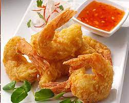

Golden Fried Prawns Recipe

Ingredients:
- 1 pound large prawns (shrimp), peeled and deveined
- 1 cup all-purpose flour
- 2 eggs, beaten
- 1 cup breadcrumbs
- 1/2 teaspoon salt
- 1/4 teaspoon black pepper
- 1/2 teaspoon paprika
- Vegetable oil for frying
- Lemon wedges for serving
Instructions:
- Begin by preparing the prawns. Pat them dry with paper towels and season with salt, black pepper, and paprika.
- Set up a breading station with three shallow bowls. One with flour, one with beaten eggs, and one with breadcrumbs.
- Dip each prawn into the flour, making sure it's coated evenly. Shake off any excess flour.
- Next, dip the prawn into the beaten eggs, allowing any excess to drip off.
- Finally, coat the prawn with breadcrumbs, pressing the breadcrumbs onto the prawn to adhere. Repeat for all prawns.
- In a large skillet, heat vegetable oil over medium-high heat. Carefully add the breaded prawns and cook for about 2-3 minutes per side, or until they are golden brown and crispy.
- Remove the golden fried prawns from the skillet and place them on a paper towel-lined plate to remove excess oil.
- Serve hot with lemon wedges and your favorite dipping sauce.